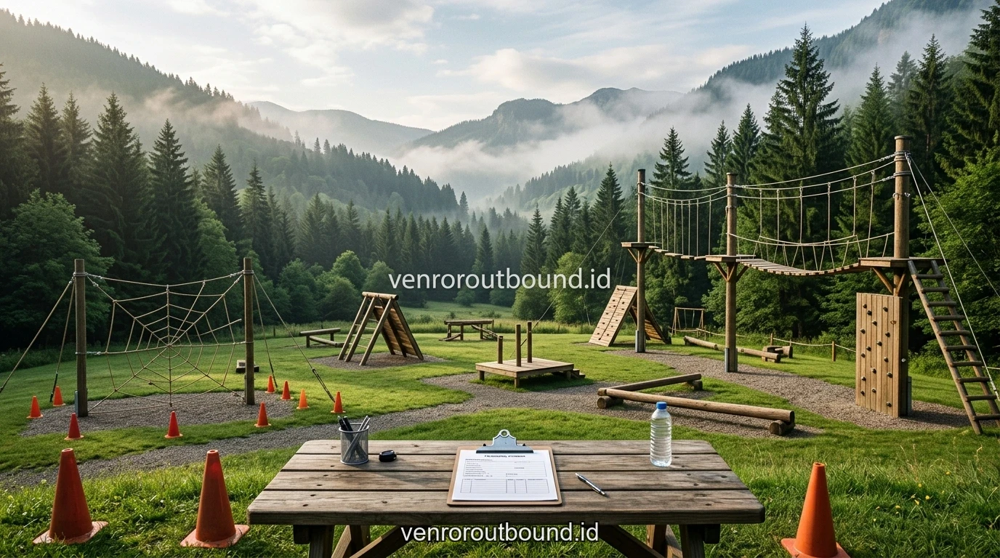

1. Urgensi dan Landasan Konseptual: Mengasah Strategi & Fokus Tim Melalui Simulasi Archery Battle & Paintball
Jawaban singkat: Simulasi archery battle dan paintball dapat digunakan sebagai aktivitas team building yang melibatkan strategi, komunikasi, pembagian peran, dan pengambilan keputusan. Karena aktivitas memiliki unsur risiko dan peralatan khusus, desain permainan harus memperhatikan briefing, perlengkapan pelindung, kondisi peserta, aturan arena, serta pengawasan instruktur.
Perencanaan program di alam terbuka selalu membutuhkan pertimbangan cermat antara target hasil yang diharapkan dan kesiapan teknis pelaksanaan di lapangan. Dalam konteks pengembangan individu maupun penguatan kerja sama tim, pendekatan berbasis simulasi luar ruang menghadirkan ruang interaksi yang lepas dari sekat formalitas ruang kerja atau kelas konvensional.
Fokus utama dari penyelenggaraan kegiatan bukanlah sekadar menghabiskan anggaran tahunan, melainkan menyajikan pengalaman transformatif yang membangun pemahaman nilai, komunikasi dua arah yang lebih cair, serta ketahanan mental dalam memecahkan masalah bersama. Melalui perencanaan yang berorientasi pada kegiatan outbound wisata dan simulasi taktis, setiap tahapan aktivitas dapat diukur dan dipertanggungjawabkan secara proporsional.
2. Analisis Tantangan Nyata dan Pendekatan Metodologis
Dalam praktiknya, berbagai kendala kerap ditemui apabila perancangan kegiatan hanya mengandalkan asumsi tanpa asesmen kebutuhan awal. Penyelenggara sering kali menghadapi tantangan terkait disparitas rentang usia peserta, perbedaan tingkat stamina fisik, serta resistensi terhadap aktivitas bergerak di alam bebas. Oleh sebab itu, kerangka kerja terstruktur menjadi syarat mutlak keberhasilan:
- Asesmen Profil Peserta Secara Menyeluruh: Memetakan kondisi fisik, riwayat medis ringan, serta dinamika interpersonal antarkelompok sebelum menetapkan intensitas permainan.
- Rancangan Alur Aktivitas Bergradasi: Memulai dari sesi ice breaking pencair kecanggungan, meningkat ke problem-solving challenge tingkat menengah, dan diakhiri simulasi sinergi kolaboratif.
- Fasilitasi Refleksi Terbimbing: Memberikan ruang jeda bagi peserta untuk mengekspresikan apa yang mereka rasakan, dinamika apa yang terjadi di dalam kelompok, dan apa konsekuensi dari setiap keputusan yang diambil.

Menjaga Keselamatan & SOP Peralatan Simulasi Tempur Outbound
Panduan penting untuk mendalami perspektif praktis dan evaluasi kebutuhan program organisasi Anda.
3. Tabel Analisis Komparatif Karakteristik Pendekatan
Untuk memudahkan penentuan format yang paling relevan dengan kebutuhan institusi Anda, tabel perbandingan berikut menyajikan matriks evaluasi aspek-aspek kunci yang perlu dipertimbangkan:
4. Panduan Implementasi Lapangan & Manajemen Risiko
Keselamatan peserta merupakan prioritas non-negosiasi dalam setiap pelaksanaan kegiatan di luar ruang. Terlepas dari seberapa menariknya tema acara, mitigasi risiko wajib disiapkan sejak tahap survei venue hingga pembubaran rombongan. Aspek teknis yang harus dipastikan meliputi:

5. Alur Tahapan Eksekusi Kegiatan yang Terstruktur
Agar seluruh rangkaian agenda terlaksana tepat waktu tanpa menciptakan kepenatan fisik yang berlebih, jadwal kegiatan wajib dirancang dengan proporsi istirahat yang cukup. Berikut adalah urutan skenario operasional yang disarankan:
- Fase Penyambutan & Conditioning: Memberikan arahan umum mengenai aturan keselamatan (*safety induction*), orientasi lingkungan, serta latihan peregangan motorik ringan.
- Fase Pembentukan Dinamika (*Ice Breaking*): Memecah sekat kekakuan lewat permainan kata dan gerak interaktif yang membangkitkan tawa bebas stres.
- Fase Rotasi Tantangan (*Group Dynamics*): Masing-masing regu dihadapkan pada pos simulasi bertingkat yang menuntut negosiasi taktik dan pembagian peran yang adil.
- Fase Debrief & Komitmen Tindak Lanjut: Mengajak perwakilan kelompok merumuskan poin pembelajaran utama dan merencanakan implementasinya ke dalam rutinitas harian.
Paket Outbound Plus Paintball & Archery Strategy Batu Malang
Panduan penting untuk mendalami perspektif praktis dan evaluasi kebutuhan program organisasi Anda.
Konsistensi penjadwalan dan fleksibilitas durasi antarpos memungkinkan setiap peserta tetap fokus menyerap esensi pelatihan tanpa terburu-buru oleh tekanan waktu.
6. Faktor Kunci Keberhasilan dan Parameter Evaluasi
Pengukuran hasil kegiatan sebaiknya mengombinasikan umpan balik langsung (evaluasi kepuasan peserta) dengan observasi perilaku pascakegiatan. Beberapa tolok ukur kualitatif yang dapat diamati antara lain:
- Kelancaran Komunikasi Antardivisi: Menurunnya hambatan birokrasi komunikasi antartim kerja setelah saling mengenal karakter di lapangan.
- Tingkat Inisiatif & Akuntabilitas: Kesediaan individu mengambil tanggung jawab tanpa harus selalu menunggu instruksi kaku atasan.
- Solidaritas & Saling Mendukung: Terbentuknya rasa saling percaya dan empati terhadap beban kerja yang dipikul oleh rekan kerja lainnya.
Kombinasi evaluasi kuantitatif dan kualitatif memberikan gambaran menyeluruh terhadap dampak program terhadap budaya kerja perusahaan dalam jangka panjang.
Mengasah Pengambilan Keputusan Di Bawah Tekanan Simulasi Lapangan
Panduan penting untuk mendalami perspektif praktis dan evaluasi kebutuhan program organisasi Anda.
7. Kesimpulan dan Rekomendasi Tindak Lanjut
Penyelenggaraan agenda outdoor yang berbobot memerlukan perpaduan seimbang antara kenyamanan logistik, pengawasan keselamatan yang disiplin, serta modul edukasi yang menyentuh ranah afektif peserta. Dengan mempercayakan rancangan kegiatan kepada fasilitator profesional yang memahami psikologi kelompok, investasi waktu dan biaya yang dikeluarkan akan berbuah pada penguatan budaya kerja dan kebersamaan yang kokoh.
Ingin Merancang Program yang Tepat Sasaran untuk Institusi Anda?
Diskusikan profil peserta, preferensi lokasi pegunungan asri di Batu Malang, dan modul simulasi yang dirancang khusus bersama tim ahli kami di +62 82211221909.
Hubungi Kami via WhatsApp